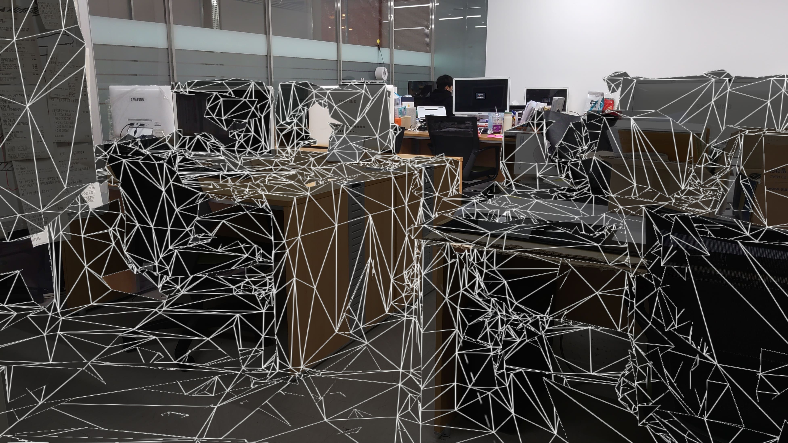
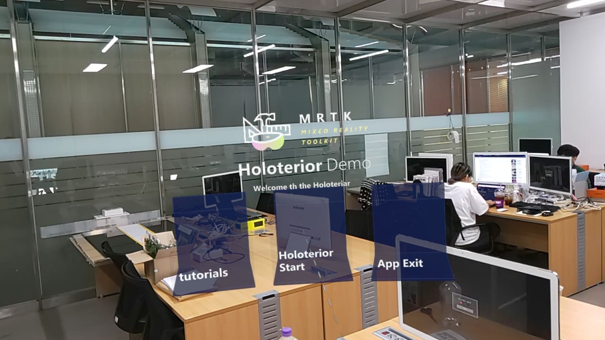
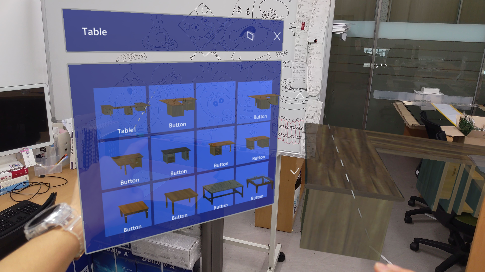

신 동주
Shin Dong Ju
'보듬잇' 은 동서대학교 SW가치확산센터의 SW교육 프로그램의 원활한 운영을 위한 보조강사 및 멘토, 캠프운영 보조 활동을 위한
봉사 동아리의 이름입니다.
< MR 기반 DIY 디자인 시스템 개발 및 DIY 인테리어 UX 향상 연구 > 라는 제목으로 연구를 하던 중
교육부와 한국과학창의재단이 주관하는 학부생 연구프로그램(URP)을 찾게되어 신청서를 제출하여
최종적으로 선발되게 되었습니다.
- 개발 목표
본인이 사고자하는 가구가 현재 집 인테리어에 적합한지 제작 전까지 예상하기 힘들다는 문제점을 해결하고자
사용자의 인테리어에 직접적으로 투영하며 디자인을 할 수 있는 MR 기반의 시스템을 활용하여 사용자가 사전에 가상으로 가구를 디자인하고 배치해볼 수 있는 시스템.
- 연구 결과 및 결론
연구에서 홀로렌즈2를 활용하여 인테리어 어플리케이션을 제작하여 더미데이터에서 원하는 가구를 선택하고 불러오며 사이즈를 조절하고 실제 바닥과 책상들
현실 오브젝트를 인식하여 주변에 가상 가구를 배치하는데 까지는 성공 하였지만 실제로 상용화 하기엔 가상의 가구의 정확한 수치를 불러오며 조작하는 과정에서
많은 오류가 발생하였다.
또한, 홀로렌즈2라는 특성상 부족한 레퍼런스로 하나하나 만들어가는 과정에서 많은 시간이 소모되어 영문으로된 doc 파일을 읽고 해석하며
적용하는데 많은 시간이 걸렸지만 학부생 연구 프로그램을 통해 해보고싶었던 홀로렌즈 MR 가상 어플리케이션을 연구할 수 있었던 좋은 기회였던 것 같다.
< 홀로렌즈의 사진기능을 통해 동작중인 모습을 찍은 화면 >

< unity에서 개발중 preview 화면 캡쳐 사진 >
< Spatial Mapping기능을 이용하여 오브젝트를 인식하고 인식된 오브젝트를 표시 >
< 제작한 인테리어 어플리케이션의 메인화면 >
